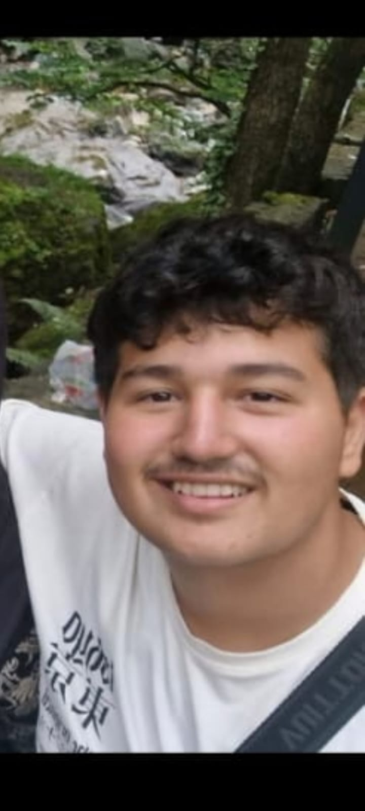
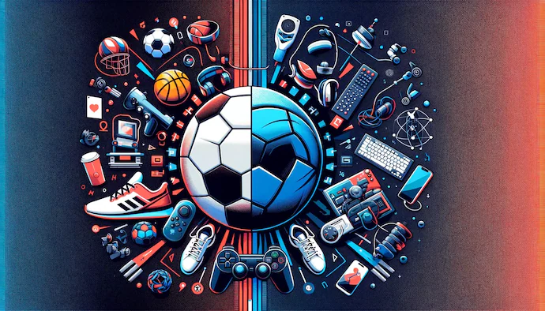
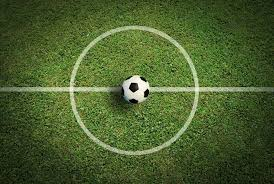

|  |
Furkan CeylanMijn naam is Furkan en ik ben 16 jaar oud en geboren in Amsterdam op 15-02-2008. ik woon in Amsterdam-west en ik kom van de school Yuverta college. en ik deed daar de vakken groen. ik volg nu de opleiding Software developer en ik wil een full stack developer worden denk ik. ik zit nog na te denken over wat ik wil in software devloping |
Amsterdamik ben geboren in Amsterdam-west in mijn eigen huis niet in de ziekenhuis. in mijn leven ben ik maar 1x verhuist toen ik 6 was, ik ben maar 3 straten verder op gaan wonen en daar woon ik nu nog steeds. amsterdam blijft altijd in mijn hartje |
 |
in mijn vrije tijd.. |
|
|  |
In mijn vrije tijd doe ik vaak niet echt zo veel. ik ga 5x per week maandag tot en met vrijdag gymen, dat is mijn hobbie, ik vind gymen heel leuk want aan het einde kun je het resultaat zien net als het developen van sites. daar naast game ik ook vaak, ik game al sinds ik 9 ben 2017. gymen doe ik soms met vrienden en soms alleen. vaak ga ik ook met mijn vrienden fietsen op de fatbike, we gaan vaak naar schiphol om naar de vluigtuigen te kijken. |
Wat kan ik al |
|
|
Ik heb in mijn hele leven ongeveer 3 sites gemaakt maar het waren geen moeilijke sites het waren simpelen sites waar ik nieuwe codes in ging uitproberen. Ik kan ook pc bouwen, ik heb mijn eigen pc thuis helemaal zelf gebouwd. dat was een ervaring. ik kan ook voetballen, dat deed ik toen ik 12 was. |
 |
mijn top 10 muziek
- ballin
- Anlatamam
- Robbery
- Legends
- Show me up
- Bandit
- Pride
- Crack !
- DNA.
- Die with a smile